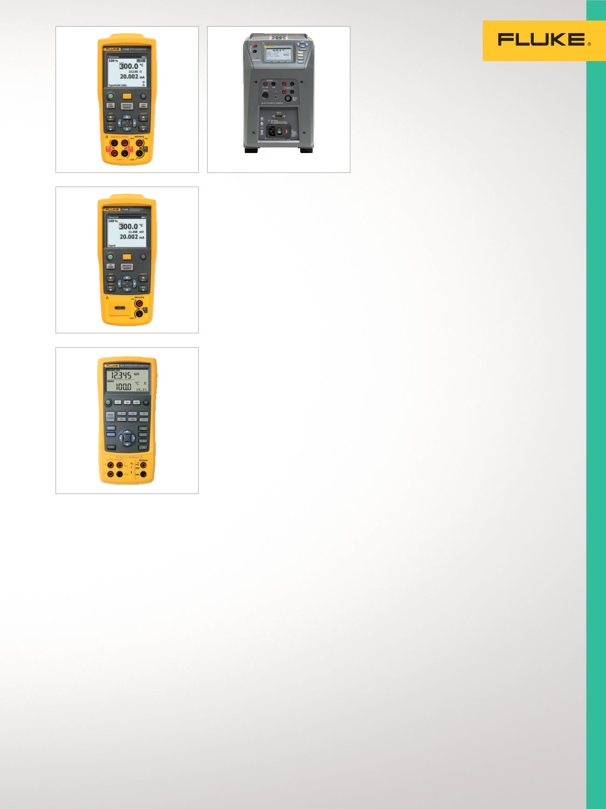

17
Temperaturkalibrierung
Tragbare Temperatur-
kalibratoren
Geeignet zum Kalibrieren
von Temperaturtransmittern,
eingebauten Messgeräten
und anderen Geräten, die
an Temperatursensoren
angeschlossen werden.
Prozesskalibrator 712 RTD
Liefert eine herausragende Leistung
und Zuverlässigkeit in einem
kompakten, leichten und bequem
tragbaren Werkzeug.
•
Temperaturmessung über die
Augangssignale von RTDs
•
Simulieren von RTDs
•
Messen zusätzlicher RTDs
mithilfe der Ohm-Messfunktion
•
Simulieren zusätzlicher RTDs
mithilfe der Ohm-Geberfunktion
•
NIST-rückführbare Kalibrierung
Thermoelement-Kalibrator 714
Liefert eine herausragende Leistung
und Zuverlässigkeit in einem
kompakten, leichten und bequem
tragbaren Gerät.
•
Temperaturmessung über die Aus-
gangssignale von Thermoelementen
•
Simulieren von Thermoelementen
•
Kalibrieren linearer
Thermoelementtransmitter
mit mV-Geberfunktion
•
NIST-rückführbare Kalibrierung
Temperaturkalibrator 724
Leistungsstarke und benutzerfreundli-
che Mess- und Geberfunktionen
zum Testen und Kalibrieren nahezu
aller Temperaturinstrumente.
•
Messen von RTDs,
Thermoelementen, Widerständen
und Spannungen zum Testen von
Sensoren und Transmittern
•
Geben/Simulieren von
Thermoelementen, RTDs, Spannung
und Widerstand zum Kalibrieren
von Transmittern
•
Ausführen schneller Linearitätstests
mit Schritten von 25 % und 100 %
•
NIST-rückführbare Kalibrierung
Multifunktionstemperatur
quellen für denFeldeinsatz
Leicht, portabel und durch hohe
Genauigkeit ideal für die rückführbare
Kalibrierung von Temperaturinstrumen-
ten. Geeignet für die Kalibrierung von
Thermoelementen, RTDs, PRTs und
anderen Temperatursensoren.
Metrologie-Blockkalibrator 9142
für den Feldeinsatz
Vereint Handlichkeit, Geschwindigkeit
und Funktionalität beim Einsatz in der
industriellen Prozessumgebung.
•
Temperaturbereich von –25 °C bis 150 °C
•
Anzeigegenauigkeit von ±0,2 °C über
den gesamten Bereich
•
Eingebaute Zweikanalanzeige für PRT,
RTD, Thermoelement, 4-20 mA Strom
•
Optional integriertes Thermometer
mit Digitalanzeige
•
Kalibrierzertifikat aus
akkreditiertem Labor
Metrologie-Blockkalibrator 9143
für den Feldeinsatz
Maximierung der Portabilität,
Geschwindigkeit und Funktionalität
für die industrielle Prozessumgebung.
•
Temperaturbereich von 33 °C bis 350 °C
•
Anzeigegenauigkeit von ±0,2 °C über den
gesamten Bereich
•
Eingebaute Zweikanalanzeige
für PRT, RTD, Thermoelement,
4-20 mA Strom
•
Optional integriertes Thermometer
mit Digitalanzeige
•
Kalibrierzertifikat aus
akkreditiertem Labor
Metrologie-Blockkalibrator 9144
für den Feldeinsatz
Kalibrierung mit hoher Genauigkeit
und schnellen Temperaturanstiegsraten
für die industrielle Prozessumgebung.
•
Temperaturbereich von 50 °C bis 660 °C
•
Aufwärmen bis 660 °C in 15 Minuten
•
Anzeigegenauigkeit von ±0,35 °C bei
420 °C bis ±0,5 °C bei ±660 °C
•
Optional integriertes Thermometer
mit Digitalanzeige
•
Kalibrierzertifikat aus
akkreditiertem Labor
712
724
9142/9143/9144
714